This is a real LangGraph state machine — the diagram follows one graph.invoke() call through risk assessment, an optional human-approval pause that can span a process restart, idempotency checking, and bounded retry, node by node.

| Node | Location | What it does |
|---|---|---|
| DECIDE | graph.py:decide_action() | A static rule, deliberately not an LLM call: requires_approval = action in RISKY_ACTIONS. Kept simple so this project's graph-mechanics tests stay 100% deterministic. |
| HUMANNODE | graph.py:human_approval() | Calls LangGraph's interrupt(), which genuinely pauses the graph — execution doesn't resume until something later calls graph.invoke(Command(resume=...)) with the same thread_id, possibly from an entirely new process. |
| IDEMCHECK | idempotency_store.py:has_been_executed() | Reads a JSON file on disk keyed by idempotency_key. If the SAME key was already executed — even in a previous, now-dead process — the action is skipped, not repeated. |
| SIMFAIL / MAXCHECK | graph.py:execute_action() | simulate_failures is a test hook (real code has real transient failures instead). MAX_ATTEMPTS=3 caps the retry loop — the graph reroutes back to execute_action via route_after_execute() until it either succeeds or gives up. |
"restart_instance" isn't in RISKY_ACTIONS — the graph skips the human-approval node entirely and goes straight to execution.
CHECKSIT → DECIDE(False) → ROUTEDECIDE(False) → EXECNODE → IDEMCHECK(No) → SUCCEED → END"delete_data" triggers interrupt(). The demo then opens a BRAND NEW checkpointer connection (simulating a process restart) before resuming with rejection — proving the pause survived, not just paused in memory.
First call executes and marks the key done; a second call with the identical key hits the cache and does NOT re-run the action — even from a different graph thread.
EXECNODE → IDEMCHECK(Yes) → CACHEHIT → ENDsimulate_failures=2 means attempts 1 and 2 fail; attempt 3 (exactly at MAX_ATTEMPTS) succeeds — the boundary case verified by a dedicated test.
interrupt() for human approval on risky actions, resumable from a fresh process via a persisted checkpoint and the same thread_id.MAX_ATTEMPTS = 3) rather than retrying indefinitely.RISKY_ACTIONS) is a static hardcoded set, not derived from any policy engine or learned signal — adding a new risky action type requires a code change.LangGraph's checkpointer persists the full graph state — including which node is currently paused at interrupt() — keyed by thread_id, to whatever backend is configured (a file/sqlite checkpointer in this demo). Resuming means opening a new checkpointer connection with the same thread_id and calling graph.invoke(Command(resume=...)) — the new process doesn't need any in-memory state from the old one, only the persisted checkpoint and the thread ID. It breaks if the checkpoint backend isn't actually durable (e.g. an in-memory-only checkpointer) or if the thread_id isn't preserved/communicated to whatever resumes the flow — both would silently lose the pause.
A plain JSON file has no atomic read-modify-write guarantee — two workers checking 'has this key been executed' and then both writing 'now it has' can race and both execute the action, defeating the entire point of the store. I'd move to a backend with a real atomic compare-and-set primitive — Redis SETNX or a Postgres row with a unique constraint on the idempotency key and an INSERT-fails-if-exists check — so the 'claim this key' operation is atomic across workers, not just atomic within one process.
Retrying a permanent failure (bad input, a 4xx-equivalent error) three times just wastes time and delays the eventual, correct failure signal — while retrying a transient failure (a momentary network blip) only three times with no backoff can still fail if the downstream needs more than a few hundred milliseconds to recover. I'd classify failures at the point they're raised (transient vs permanent, ideally via a typed exception hierarchy), skip retry entirely for permanent failures, and add exponential backoff with jitter for transient ones — the fixed-budget, no-backoff retry here is fine for a fast deterministic demo but wrong for anything hitting real infrastructure.
I'd externalize RISKY_ACTIONS into a policy service or config store (even a simple versioned YAML/JSON in a config repo, reloaded periodically) owned by whoever's accountable for operational risk — SRE leadership or a platform-safety team, not the agent's own codebase. The graph's decide_action() node would query that policy at runtime instead of importing a Python constant. That decouples 'what's risky' (a policy decision, changes with organizational risk appetite) from 'how do we pause and resume for approval' (a mechanism, should rarely need to change) — mixing those two concerns in one hardcoded set is the actual design smell here, deliberately left simple for this portfolio's scope.
As built, the idempotency store only tracks whether a key has been executed, not what action was associated with it — so a second, different action submitted under the same key would be silently skipped as a 'duplicate', which is wrong if it's actually a different action that happens to share a key (a caller bug, but one the system should catch). A more defensive version would store a hash of the action payload alongside the key and raise a conflict error if the same key arrives with different action content, rather than silently treating it as a legitimate replay.